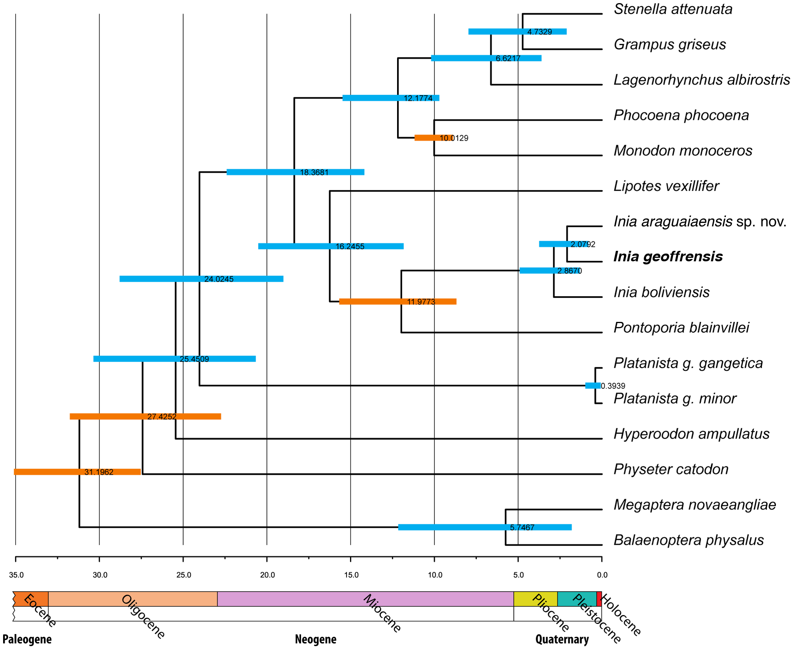

As we can see, the Amazon river dolphins are closely related to other freshwater dolphins, such as Inia araguaiaensis or Inia boliviensis.. We can also see they branch off from Pontoporia blainvillei, or La Plata dolphins, which is the only freshwater dolphin that live in estuaries between fresh and salt water rather then exclusively live in freshwater, about 12 million years ago, in Miocene. Going back even further, we can see like other cetaceans like narwhale, Risso's dolphin, and Harbour porpoise spliting off 18 million years ago.
What Problem Does Boto Face?

-
Compared to their saltwater relative they have split from 18 million years ago, the Amazon river dolphin cannot live in saltwater, this has limited their habitat to rivers only, but river's natually more dirty water has caused them to evolve a few traits...
- The Amazon river dolphin have a comparatively bigger melon, which is a mass of adipose tissue found in the forehead of all toothed whales. It focuses and modulates the animal's vocalizations and acts as a sound lens. It is thus a key organ involved in communication and echolocation. Since the freshwater dolphins live in the river, which is comparatively dirty and hard to see, they evolved a bigger melon to obtain a better echolocation.
- Similar to how the freshwater dolphins have a bigger melon due to low visibility in the river, Amazon freshwater dolphins also have adapted with a worsened state of eyes, since it is not really important for living in the river.
-
Another important challenge coming from living in the river is their main income of food - it is different compared to those that live in the sea.
- Compared to other cetaceans that lives in the sea, freshwater dolphins have a long, narrow beak, because it is better suited for their enhenced echolocation ability, compared to using eyes like other cetaceans.
- Another trait they have used to adapt to river hunting is how their endoskeletons are different - their spine and their head are not connected by bones. This change helps them to turn their head easily to hunt the crabs and turtles that live on the riverbed, compared to fishing in the middle of sea in the ocean.